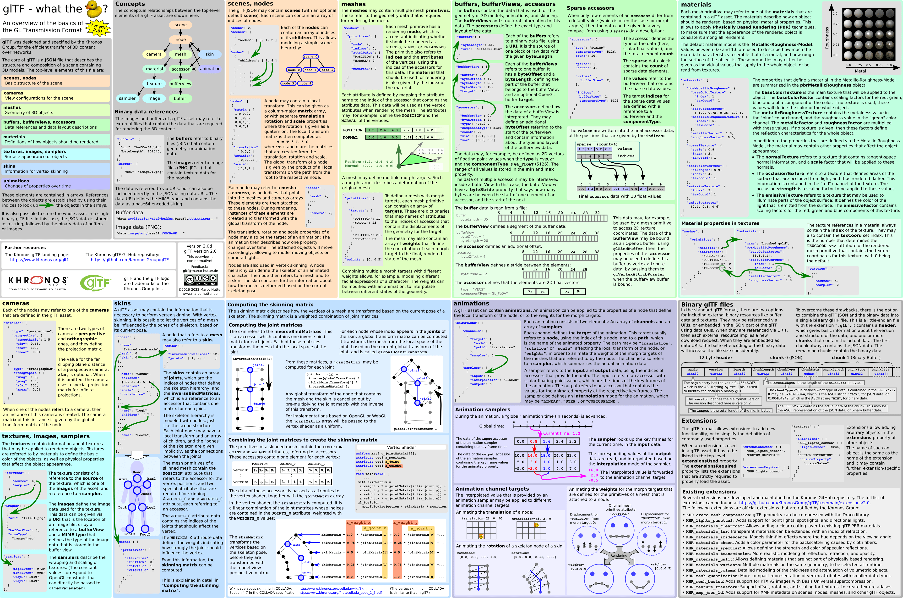

glTF 2.0 처음부터 이해하기
파일이 어떻게 생겼는지, 데이터가 어떤 길로 이어지는지, 그리고 SherlockEngine 의 직접 만든 임포터가 어디까지 읽는지.
작성 2026-11-11. 기준: 커밋 e646dff + 아직 커밋하지 않은 Import 분리 작업(Graphics/Import/GltfImporter.cpp). 코드 상태는 이 시점에 확인한 내용입니다.
LoadMeshes·LoadMaterials·BuildInstances 를 짤 때 펴 놓고 보는 용도입니다. 8장은 "읽지 않아도 되는 것"의 목록입니다.specification/2.0/schema)에서 확인한 것만 적었습니다. 스펙 본문은 일부만 읽혀서 나머지는 스키마로 보충했습니다. 코드 위치는 "파일 + 함수 이름"으로 적고 줄 번호는 쓰지 않았습니다.1. 한 장으로 보기
glTF 는 3D 모델을 담는 파일 형식입니다. 구조는 단순합니다.
- JSON 이 "무엇이 어디에 있는지"를 설명하고,
- 바이너리(
.bin파일, 또는 base64 문자열, 또는 GLB 안의 청크)가 정점·인덱스·이미지의 실제 바이트를 담습니다.
JSON 안의 요소(nodes, meshes, materials, accessors …)는 전부 배열이고, 서로를 배열 번호로 가리킵니다. 이름이나 포인터가 아니라 번호입니다.
"nodes": [ { "mesh": 0 } ] ← nodes[0] 은 meshes[0] 을 그린다
"meshes": [ { "primitives": [ {
"attributes": { "POSITION": 0, "NORMAL": 1 }, ← accessors[0], accessors[1]
"indices": 3, ← accessors[3]
"material": 0 } ] } ] ← materials[0]
"accessors":[ ... ] ← 0번부터 3번까지, 각각 bufferViews[n] 을 가리킴이 문서의 5장에서 이 번호 따라가기를 실제 파일로 해 봅니다.
관계도
화살표는 "번호로 가리킨다"는 뜻입니다. 파란 상자는 우리 임포터가 읽는 것, 점선 상자는 현재 읽지 않는 것입니다. 화살표 하나하나의 필드 이름은 다음과 같습니다: scene → node 는 scenes[].nodes, node → node 는 children, node → mesh 는 mesh, mesh → primitive 는 primitives[], primitive → accessor 는 attributes·indices, accessor → bufferView → buffer 는 각각 bufferView·buffer, primitive → material 은 material, material → texture 는 …Texture.index, texture → image·sampler 는 source·sampler.
데이터는 아래에서 위로 쌓입니다. 바이트(buffer) → 그 구간(bufferView) → 그 구간을 해석하는 방법(accessor) → 그것을 쓰는 곳(primitive). 그래서 임포터도 같은 순서로 일합니다.
LoadBuffers → LoadImages → LoadMaterials → LoadMeshes → BuildInstances
(바이트) (이미지) (재질) (메시) (노드 = 인스턴스)이 순서는 LoadGltfOwn(Graphics/Import/GltfImporter.cpp)이 그대로 따르고 있습니다.
Khronos 포스터 원본 보기 (“glTF – what the duck?”)

2. 파일 모양: .gltf, .bin, .glb
같은 내용을 담는 방식이 세 가지입니다.
| 방식 | 구성 | 바이너리가 있는 곳 |
|---|---|---|
| 분리형 | 모델.gltf + 모델.bin + 이미지 파일들 | buffers[i].uri 가 파일 이름 ("Triangle_PosColor.bin") |
| 내장형 | 모델.gltf 하나 | uri 가 "data:application/octet-stream;base64,…". 파일이 base64 때문에 약 1/3 커짐 |
| GLB | 모델.glb 하나 | 파일 안의 BIN 청크. 이 버퍼는 uri 가 아예 없음 |
uri 안의 %20 같은 퍼센트 이스케이프는 원래 글자로 되돌려야 하고, 경로 구분자는 / 입니다. 엔진은 LoadUriBytes + DecodeUriEscapes + DecodeBase64 가 처리합니다.
GLB 의 바이트 구조 (실제 파일 Triangle_PosColor.glb, 1192 바이트)
칸 너비는 비율이 아니라 읽기 쉽게 정한 값입니다. 실제 크기는 칸 안의 숫자를 보세요.
오프셋 0..11 67 6c 54 46 02 00 00 00 a8 04 00 00
'g' 'l' 'T' 'F' version=2 length=0x04A8=1192 (전부 little-endian uint32)
오프셋 12..19 18 04 00 00 4a 53 4f 4e
length=0x0418=1048 type='JSON'
오프셋 20..1067 JSON 텍스트 1048 바이트 ({"asset":{"generator":... "buffers":[{"byteLength":116}]})
오프셋 1068..1075 74 00 00 00 42 49 4e 00
length=116 type='BIN\0'
오프셋 1076..1191 BIN 데이터 116 바이트 (= Triangle_PosColor.bin 과 같은 내용)합: 12 + (8 + 1048) + (8 + 116) = 1192 = 헤더의 length. 이 등식이 맞다는 것은 읽는 사람이 파일이 온전한지 확인하는 방법입니다. ParseContainer 는 이 합을 직접 계산하지 않고 두 가지를 검사합니다. 헤더의 length 가 실제 파일 크기 이하인지, 그리고 청크 하나하나가 length 범위 안에 들어가는지입니다.
- 첫 청크는 JSON, 다음이 BIN 입니다. 청크의 시작과 끝은 4바이트 경계에 맞아야 하고, JSON 청크는 뒤에 공백(
0x20)으로, BIN 청크는0x00으로 채웁니다. 이 파일은 JSON 이 우연히 1048(= 4의 배수)바이트라 채움이 없습니다. - 이 파일의 JSON 에서
buffers[0]은{"byteLength":116}뿐,uri가 없습니다. 이것이 "GLB 의 BIN 청크가 buffers[0] 이다"의 실제 모습입니다.LoadBuffers가glbBin을 여기에 연결합니다. - 알 수 없는 청크 타입은 건너뜁니다. 확장자(
.gltf/.glb)는 보지 않고 앞 4바이트(glTF)로 판별합니다.
Graphics/Import/GltfImporter.cpp 의 ParseContainer(헤더·청크 순회·JSON 파싱), LoadBuffers(uri 없음 = GLB BIN, data URI, 외부 파일, byteLength 검사). 두 함수 모두 구현되어 있습니다.3. 요소 한눈에: 무엇을 하고, 엔진이 어디까지 읽나
왼쪽 두 열은 glTF 의 설명, 오른쪽 두 열은 SherlockEngine 의 현재 상태입니다. 코드 위치는 모두 Graphics/Import/GltfImporter.cpp 안의 함수입니다.
| 요소 | 하는 일 | 상태 | 코드 |
|---|---|---|---|
buffers | 바이트 덩어리. uri 또는 GLB BIN | 구현됨 | LoadBuffers, LoadUriBytes |
bufferViewsaccessors | 바이트 구간과, 그 구간을 정점·인덱스로 읽는 방법 | 구현됨 | LoadAccessor, ReadFloat, ReadIndex |
images | PNG/JPG 파일 바이트 (uri 또는 bufferView) | 구현됨 | LoadImages, ImageName |
materials | PBR 재질 값과 텍스처 참조 | 미구현 | LoadMaterials, ConvertMaterial |
texturessamplers | 텍스처 = 이미지 + 샘플러 한 쌍. 샘플러는 필터·랩 모드 | 미구현 | TextureName, ToSamplerPreset |
meshesprimitives | 그릴 형상. primitive 하나 = 재질 하나 + 정점 속성 묶음 | 미구현 | LoadMeshes, ConvertMesh |
nodesscenes | 트리 구조, 위치·회전·크기 변환, 어느 메시를 어디에 놓을지 | 미구현 | BuildInstances, NodeLocalMatrix |
camerasskinsanimations | 카메라 설정, 뼈대 스키닝, 시간에 따른 값 변화 | 읽지 않음 | 8장 |
extensions | 스펙에 없는 기능 추가 | 거의 읽지 않음 | 8장 |
"구현됨"은 코드가 있고 빌드가 된다는 뜻입니다. 실제 모델 파일로 끝까지 돌려 본 것은 아닙니다. 재질·메시·노드가 아직 없으므로, Options::useOwnGltfImporter 를 켜고 로드하면 LoadMaterials 단계에서 "미구현" 로그가 나오며 멈춥니다. 켜지 않으면(기본값) 기존 cgltf 경로가 그대로 동작합니다.
엔진이 최종적으로 받아야 하는 것
LoadGltfOwn 은 Model& out 하나를 채워서 돌려줍니다(Graphics/Model.h).
Model 필드 | glTF 에서 오는 곳 |
|---|---|
images[] (ModelImage) | images. 이름과 PNG/JPG 바이트 그대로 |
materials[] (Material) | materials + 맨 끝에 "재질 없음" 기본 슬롯 1개 |
meshes[] (Mesh) | meshes. primitive 들을 정점·인덱스 배열 하나로 합치고 Submesh 로 구간을 나눔 |
instances[] (ModelInstance) | mesh 를 가진 nodes. 월드 행렬 포함 |
bounds, stats | 직접 계산 (BoundsAccumulator, FinishModel) |
4. 데이터가 가는 길: buffer → bufferView → accessor
정점 하나를 읽기까지 세 겹을 지납니다.
| 층 | 무엇을 알려 주나 | 주요 필드 |
|---|---|---|
buffer | 바이트 덩어리 전체 | uri, byteLength |
bufferView | 그 안의 한 구간과 요소 간격 | buffer(번호), byteOffset, byteLength, byteStride, target |
accessor | 그 구간을 어떻게 해석할지 | bufferView(번호), byteOffset, componentType, type, count, normalized, min/max |
i 번째 요소의 위치
요소크기 = componentType 의 바이트 수 × type 의 성분 수
stride = bufferView.byteStride 가 있으면 그 값, 없으면 요소크기 (빽빽하게 붙어 있음)
주소(i) = buffer 시작 + bufferView.byteOffset + accessor.byteOffset + i × stridebyteOffset 은 둘 다 없으면 0 입니다. 엔진의 LoadAccessor 가 이 계산을 하고 AccessorView.data(첫 요소 주소)와 stride 로 돌려줍니다.
componentType 과 type
| componentType | 이름 | 바이트 | type | 성분 수 | |
|---|---|---|---|---|---|
| 5120 | BYTE | 1 | SCALAR | 1 | |
| 5121 | UNSIGNED_BYTE | 1 | VEC2 | 2 | |
| 5122 | SHORT | 2 | VEC3 | 3 | |
| 5123 | UNSIGNED_SHORT | 2 | VEC4 | 4 | |
| 5125 | UNSIGNED_INT | 4 | MAT2 / MAT3 / MAT4 | 4 / 9 / 16 | |
| 5126 | FLOAT | 4 | (5124 는 없음. 건너뛴 번호) | ||
그래서 VEC3 + FLOAT 는 요소 12바이트, SCALAR + UNSIGNED_SHORT 는 요소 2바이트입니다. 인덱스에 쓸 수 있는 타입은 UNSIGNED_BYTE/UNSIGNED_SHORT/UNSIGNED_INT 이고, 스펙은 UNSIGNED_INT 를 인덱스가 아닌 accessor 에 쓰지 못하게 합니다.
normalized: 정수를 0~1 로
색·UV 를 정수로 압축해 둔 파일이 있습니다(예: COLOR_0 가 UNSIGNED_BYTE + normalized: true). 이때는 읽은 값을 실수로 환산해야 합니다.
| componentType | normalized 일 때 |
|---|---|
| UNSIGNED_BYTE / UNSIGNED_SHORT | c / 255 , c / 65535 |
| BYTE / SHORT | max(c / 127, −1) , max(c / 32767, −1) |
| FLOAT / UNSIGNED_INT | normalized 로 둘 수 없음 (스펙이 금지) |
ReadFloat(ComponentToFloat)가 이 환산을 합니다. normalized 가 아니면 값을 그대로 float 로 바꿉니다.
byteStride 가 요소보다 클 때 (인터리브)
위치·노멀·UV 를 정점 하나씩 묶어 한 bufferView 에 번갈아 넣는 방식입니다. 이때 byteStride 가 요소 크기보다 크고, 요소와 요소 사이에 다른 속성이 끼어 있습니다. 읽는 쪽은 stride 만큼 건너뛰며 읽으면 됩니다. 스키마상 byteStride 는 4 이상 252 이하이고 4의 배수입니다. LoadAccessor 는 stride 가 요소 크기보다 작으면 거부합니다.
그 밖에 알아 둘 것
bufferView.target은34962(ARRAY_BUFFER, 정점 속성) 또는34963(ELEMENT_ARRAY_BUFFER, 인덱스) 로, OpenGL 용 힌트입니다. 엔진은 읽지 않습니다.min/max는 POSITION accessor 에 반드시 들어 있는 바운딩 값입니다. 엔진은Mesh::FromData가 바운드를 직접 계산하므로 쓰지 않지만, 읽은 값이 맞는지 검증하는 기준으로는 유용합니다(5장).- 범위 검사:
LoadAccessor는 bufferView 가 buffer 안에, 요소 count 개가 bufferView 안에 들어가는지 확인합니다. 통과하면ReadFloat/ReadIndex는 범위를 넘지 않습니다. - 지원하지 않는 accessor:
sparse(일부 값만 덮어쓰는 방식, morph target 에 주로 씀)와bufferView가 없는 accessor(전부 0 으로 채움)는 오류로 돌려줍니다. 엔진의 cgltf 경로가 쓰는cgltf_accessor_read_float는 sparse 이면 0(실패)을 돌려주고, bufferView 가 없으면 0 으로 채워서 읽습니다. 그래서 두 구현의 동작이 다릅니다(9.6).
쓰는 모양
AccessorView position;
std::string error;
if (!LoadAccessor(root, buffers, positionAccessorIndex, position, error)) { /* 실패 처리 */ }
for (size_t v = 0; v < position.count; ++v)
{
float f[3];
ReadFloat(position, v, f, 3); // 위치 xyz. n 은 position.componentCount 이하여야 함
}
uint32_t index;
ReadIndex(indices, i, index); // 타입이 BYTE/SHORT/INT 어느 것이든 uint32 로5. 실습: 삼각형 파일의 바이트를 직접 읽기
예제 Triangle_PosColor.gltf 와 Triangle_PosColor.bin(116 바이트)을 끝까지 풀어 봅니다. 아래 값은 파일에서 직접 읽은 것입니다. 5장을 이해하면 LoadAccessor 가 하는 일이 전부입니다.
JSON 에서 필요한 부분
"nodes": [ { "mesh": 0, "name": "Triangle" } ]
"meshes": [ { "primitives": [ { "attributes": { "POSITION": 0, "NORMAL": 1, "COLOR_0": 2 },
"indices": 3, "material": 0 } ] } ]
"accessors":[ #0 bufferView 0, FLOAT(5126), VEC3, count 3 (POSITION)
#1 bufferView 1, FLOAT(5126), VEC3, count 3 (NORMAL)
#2 bufferView 2, FLOAT(5126), VEC3, count 3 (COLOR_0)
#3 bufferView 3, UNSIGNED_SHORT(5123), SCALAR, count 3 (indices) ]
"bufferViews":[ #0 byteOffset 0, byteLength 36 | #1 byteOffset 36, byteLength 36
#2 byteOffset 72, byteLength 36 | #3 byteOffset 108, byteLength 6 ]
"buffers": [ { "byteLength": 116, "uri": "Triangle_PosColor.bin" } ]byteStride 가 어디에도 없으므로 모두 빽빽한 배열입니다. accessor 에는 byteOffset 도 없어서 0 입니다.
.bin 116 바이트 지도
칸 너비는 비율이 아닙니다.
바이트를 float 로 읽기: little-endian
float 하나는 4바이트이고, 낮은 자리 바이트가 먼저 저장됩니다(little-endian). 파일에 00 00 80 bf 로 적혀 있으면 사람이 읽는 순서로는 0xBF800000 이고, 이것이 float −1.0 입니다. 00 00 80 3f 는 0x3F800000 = +1.0 입니다. 이 두 패턴만 알아도 이 파일을 눈으로 읽을 수 있습니다.
POSITION: 오프셋 0~35
| 정점 | 바이트 (12개) | x, y, z |
|---|---|---|
| 0 | 00 00 80 bf 43 36 15 a4 40 df 2e 22 | (−1.0, −3.2e−17, 2.4e−18) |
| 1 | 00 00 80 3f 43 36 15 24 40 df 2e a2 | (1.0, 3.2e−17, −2.4e−18) |
| 2 | 00 00 00 00 00 00 80 3f 2e bd 3b 33 | (0.0, 1.0, 4.4e−8) |
실질적으로 (−1, 0), (1, 0), (0, 1) 을 꼭짓점으로 하는 삼각형입니다. y, z 의 아주 작은 값(10⁻¹⁷, 10⁻¹⁸ 수준)은 사실상 0 입니다.
"min": [−1, −3.2e−17, −2.4e−18], "max": [1, 1, 4.4e−8] 이 적혀 있습니다. 위에서 읽은 세 정점의 각 성분 최솟값·최댓값과 정확히 같습니다. 읽는 코드를 만들고 값이 맞는지 의심될 때, 어느 파일에서든 이 방법으로 확인할 수 있습니다.NORMAL: 오프셋 36~71
세 정점 모두 00 00 00 00 00 00 00 00 00 00 80 3f = (0, 0, 1). 삼각형이 +Z 방향(glTF 에서 앞쪽)을 보고 있다는 뜻입니다.
COLOR_0: 오프셋 72~107
| 정점 | 처음 4바이트 | r, g, b (근사) |
|---|---|---|
| 0 | a5 ff 7f 3f → 0.999995 | (1, 0, 0) 빨강 |
| 1 | b9 ff 2f b5 → −6.6e−7 | (0, 0, 1) 파랑 |
| 2 | d7 7f 93 b5 → −1.1e−6 | (0, 1, 0) 초록 |
정점 번호 순서가 R-G-B 가 아니라 빨강, 파랑, 초록 입니다. 이런 것을 눈으로 확인해 두면 나중에 화면 색이 이상할 때 "읽기 문제인지 렌더 문제인지"를 가를 수 있습니다. 이 accessor 는 VEC3 이므로 알파가 없고, 엔진에서는 a = 1 로 둡니다(ReadFloat 로 3개만 읽고 a 는 기본값).
indices: 오프셋 108~113, 그리고 114~115
00 00 01 00 02 00 → uint16 little-endian → 0, 1, 2
00 00 ← 114~115. 어떤 bufferView 도 이 두 바이트를 가리키지 않음마지막 두 바이트는 쓰이지 않습니다. 전체를 4의 배수(116 = 4 × 29)로 맞춘 것으로 보이지만, 이 파일에서 확인한 사실은 "어떤 bufferView 에도 속하지 않는다"까지입니다. buffers[0].byteLength 가 116 이므로 LoadBuffers 의 "읽은 크기 ≥ byteLength" 검사는 통과합니다. (GLB 청크의 4바이트 정렬은 별개의 규칙입니다.)
LoadAccessor 가 하는 계산
| accessor | view 구간 (offset / length) | 요소 크기 = stride | 범위 검사: (count−1) ≤ (length − accOffset − 요소) / stride | 첫 요소 주소 |
|---|---|---|---|---|
| #0 POSITION | 0 / 36 | 3 × 4 = 12 | 2 ≤ (36 − 0 − 12) / 12 = 2 ✓ | buffer + 0 |
| #1 NORMAL | 36 / 36 | 12 | 2 ≤ 2 ✓ | buffer + 36 |
| #2 COLOR_0 | 72 / 36 | 12 | 2 ≤ 2 ✓ | buffer + 72 |
| #3 indices | 108 / 6 | 1 × 2 = 2 | 2 ≤ (6 − 0 − 2) / 2 = 2 ✓ | buffer + 108 |
네 accessor 모두 "정확히 맞아떨어지는" 경계값입니다. 마지막 요소가 구간 끝에 딱 닿습니다. 요소가 하나라도 더 있으면 검사가 실패합니다. 이제 ReadFloat(position, 2, f, 3) 을 따라가면:
주소 = buffer + viewOffset(0) + accessorOffset(0) + 2 × stride(12) = buffer + 24
바이트 24..35 = 00 00 00 00 00 00 80 3f 2e bd 3b 33 → (0.0, 1.0, 4.4e−8)엔진 좌표계로 옮기면 (flipZ 켜짐)
- 정점 z 의 부호를 뒤집습니다. 값이 거의 0 이라 눈에 안 보입니다.
- 노멀 (0, 0, 1) → (0, 0, −1).
- 인덱스 (0, 1, 2) → (0, 2, 1). 삼각형마다 두 번째·세 번째를 맞바꿉니다.
glTF 의 앞면은 반시계(CCW)이고, 엔진은 시계 방향이 앞면입니다(Model.h 주석). z 를 뒤집으면 화면에서 모양은 그대로(x 오른쪽, y 위)인데 감기는 방향 판정이 반대가 되므로, 인덱스를 바꿔서 앞면이 앞면으로 남게 합니다.
Model.h 주석과 코드가 다릅니다. Model.h 머리말 주석은 "인덱스 순서는 그대로 둠"이라고 쓰여 있지만, 실제 코드(GltfCgltfImporter.cpp 의 ConvertMesh)는 flipZ 일 때 삼각형마다 [i+1] 과 [i+2] 를 맞바꿉니다. 바꾸지 않으면 삼각형이 뒷면으로 판정되어 뒷면 컬링에 잘리기 때문이라고 그 함수의 주석이 설명합니다. 구현할 때는 코드를 기준으로 삼으세요.Mesh::ComputeTangents)하려 해도 UV 미분이 0 이라 의미 없는 값이 나옵니다. 이 재질에는 노멀 맵이 없어서 화면에는 영향이 없습니다. 탄젠트의 부호 규칙은 ComputeTangents 주변의 기존 주석을 따르면 되고, 여기서 다시 유도하지 않습니다.6. 씬·노드·메시: 무엇을 어디에 놓나 (LoadMeshes, BuildInstances)
6.1 scene 과 node
scenes[i].nodes는 그 씬의 루트 노드 번호 목록입니다. 최상위scene은 기본으로 보여 줄 씬 번호이고 없을 수도 있습니다.- 노드는
children(자식 노드 번호)으로 트리를 이룹니다. - 노드 하나는
mesh,camera,skin을 가질 수 있고, 하나도 안 가진 빈 노드도 흔합니다(그룹 용도). - 위치·회전·크기는
matrix(16개) 또는translation(3) /rotation(4, x y z w 쿼터니언) /scale(3) 로 줍니다. 없는 항목은 기본값(이동 0, 회전 (0,0,0,1), 크기 1)이고, 아무것도 없으면 단위 행렬입니다.
6.2 변환 행렬 곱하는 순서: 포스터와 엔진이 다르게 보이는 이유
스펙은 TRS 를 T * R * S 로 합성한다고 정의합니다. "먼저 정점에 크기를, 다음에 회전을, 마지막에 이동을 적용"하는 뜻이며 열벡터 관례(v' = M · v)입니다. DirectXMath 의 XMMATRIX 는 행벡터 관례(v' = v · M)라 같은 일을 반대 순서로 곱해야 합니다.
| glTF 스펙 · 포스터 (열벡터) | 엔진 (행벡터, DirectXMath) | |
|---|---|---|
| TRS 합성 | M = T * R * S | XMMatrixScaling * XMMatrixRotationQuaternion * XMMatrixTranslation (S → R → T 순) |
| 자식의 월드 | 부모월드 * 자식로컬 | 자식로컬 * 부모월드 |
matrix 16개 | 열 우선(column-major). 이동은 m[12]~m[14] (0부터 센 인덱스) | 값을 그대로 XMMATRIX(m[0]…m[15]) 로 읽으면 그 행벡터 행렬이 됨. 이동이 4번째 행에 들어감 |
두 표기는 서로 전치(transpose)입니다. 그래서 값은 그대로 읽고 곱하는 순서만 뒤집으면 됩니다. 쿼터니언 성분 순서는 glTF 도 XMVectorSet(x, y, z, w) 도 x, y, z, w 로 같습니다. NodeLocalMatrix 가 이 부분을 맡을 함수입니다.
6.3 노드를 인스턴스로: 월드 행렬 만들기
world = mirror * gltfWorld * mirror * rootScale (행벡터 관례)
gltfWorld = 부모에서 내려오며 누적한 노드의 월드 (위 6.2)
mirror = diag(1, 1, flipZ ? −1 : 1) ← z 를 뒤집는 반사 행렬
rootScale = 균일 스케일 options.scale반사 행렬은 자기 자신이 역행렬이라 M · A · M 이 "좌표계를 바꾼 뒤의 같은 변환"이 됩니다. 이 식은 cgltf 쪽 LoadGltfCgltf 와 같습니다.
- mesh 가 없는 노드도 자식의 월드에는 기여합니다. 빈 부모 노드에 이동·회전이 있으면 자식 메시가 그만큼 움직입니다. mesh 가 없다고 계산에서 빼면 계층이 깨집니다. 인스턴스를 만드는 것은 mesh 가 있는 노드뿐입니다.
- 같은 mesh 를 여러 노드가 가리키면
ModelInstance가 여러 개이고meshIndex는 같습니다.Mesh는 하나만 만듭니다. meshIndex는 glTF mesh 번호가 아니라out.meshes의 인덱스입니다. 변환에 실패한 mesh 는out.meshes에 들어가지 않아 번호가 어긋나므로,LoadMeshes가 만드는meshRemap표로 바꿔야 합니다(−1 이면 그 노드는 건너뜀).- 인스턴스를 만들 때마다
bounds.Add(메시 바운드, world)로 전체 바운드를 누적합니다.
scenes[scene].nodes 에서 시작해 children 을 따라 내려가며 월드를 누적하거나, (b) cgltf 처럼 모든 노드를 돌며 부모 사슬로 월드를 구합니다. 씬에 속하지 않은 노드가 파일에 있으면 둘의 결과가 달라집니다. 어느 쪽으로 할지 정하고 차이를 코드 주석에 남기도록 BuildInstances 위 주석에 적어 두었습니다. cgltf 와 결과를 비교하려면 (b) 가 같은 결과를 냅니다.Model.h 주석의 "−Z 앞"은 이 카메라 쪽 이야기로 읽어야 하고, 에셋 자체의 정면은 +Z 입니다. 5장 삼각형의 노멀이 +Z 인 것과 맞아떨어집니다.6.4 mesh 와 primitive
meshes[i].primitives[] 의 각 primitive 는 재질 하나에 대응하는 그릴 덩어리입니다. 한 mesh 에 재질이 둘이면 primitive 가 둘입니다.
| primitive 필드 | 뜻 | 없으면 |
|---|---|---|
attributes | 정점 속성 이름 → accessor 번호 | (필수) |
indices | 인덱스 accessor 번호 | 정점 순서대로 0, 1, 2, … 로 그림 |
material | materials 번호 | 기본 재질. 엔진은 "재질 없음" 슬롯을 씀 |
mode | 그리는 방식 (아래) | 4 (TRIANGLES) |
targets | morph target | 읽지 않음 (8장) |
| mode | 0 | 1 | 2 | 3 | 4 | 5 | 6 |
|---|---|---|---|---|---|---|---|
| 이름 | POINTS | LINES | LINE_LOOP | LINE_STRIP | TRIANGLES | TRIANGLE_STRIP | TRIANGLE_FAN |
엔진은 4 만 읽습니다. 다른 mode 이거나 POSITION 이 없는 primitive 는 건너뛰고 stats.skippedPrimitives 를 올립니다.
6.5 속성 → VERTEX (ConvertMesh 가 할 일)
VERTEX 필드 | glTF 속성 | 없을 때 기본값 | flipZ 일 때 |
|---|---|---|---|
x, y, z | POSITION (VEC3) | (필수) | z 부호 반전 |
nx, ny, nz | NORMAL (VEC3) | (0, 1, 0) | nz 부호 반전 |
u, v | TEXCOORD_0 (VEC2) | (0, 0) | 그대로 (glTF 도 (0,0) 이 왼쪽 위) |
r, g, b, a | COLOR_0 (VEC3 또는 VEC4) | (1, 1, 1, 1). VEC3 이면 a = 1 | 그대로 |
tx, ty, tz, tw | TANGENT (VEC4, w = ±1) | (1, 0, 0, 1). primitive 하나라도 TANGENT 가 없으면 mesh 전체를 Mesh::ComputeTangents(…, false) 로 계산 (cgltf 의 needTangents 규칙) | tz 와 tw 부호 반전 |
TEXCOORD_1 이상과 COLOR_1 이상, JOINTS_n/WEIGHTS_n 은 읽지 않습니다. 정점 초기값은 cgltf 쪽 ConvertMesh 가 쓰는 { 0,0,0, 1,1,1,1, 0,1,0, 0,0, 1,0,0,1 } 과 같게 하면 결과를 비교하기 쉽습니다.
- primitive 를 합치는 법: 한 mesh 의 모든 primitive 정점을 하나의 배열에 이어 붙이고, primitive 의 인덱스에는 앞까지 쌓인 정점 수(
baseVertex)를 더합니다. primitive 마다Submesh{ indexStart, indexCount, materialSlot }을 만듭니다. materialSlot은 glTF 재질 번호입니다. 재질이 없는 primitive 는 맨 끝의 기본 슬롯(= 재질 개수)을 씁니다.flipZ일 때는 삼각형마다 인덱스 두 번째와 세 번째를 맞바꿉니다(5장의 0,1,2 → 0,2,1).- 정점이 65,535 개 이하이면
stats.meshesWith16BitIndices를 올립니다. 실제 16비트 변환은 Renderer 가 합니다. - 변환 후 정점이나 인덱스가 하나도 없는 mesh 는 만들지 않고(
meshRemap에 −1), 오류가 아니라 "건너뜀"으로 다룹니다.
6.6 ModelInstance
| 필드 | 값 |
|---|---|
meshIndex | meshRemap[node.mesh] |
world | 6.3 의 식. XMStoreFloat4x4 로 저장 |
name | node.name, 없으면 "<모델>/node<번호>" |
7. 재질·텍스처: 어떤 값을 Material 로 옮기나 (LoadMaterials)
7.1 텍스처가 연결되는 길
재질은 이미지를 직접 가리키지 않고 texture 를 거칩니다.
material.pbrMetallicRoughness.baseColorTexture.index = 4
└→ textures[4] = { "source": 1, "sampler": 0 }
├→ images[1] (PNG/JPG 파일) ← source
└→ samplers[0] (필터·랩 모드) ← sampler그래서 이미지 이름을 얻으려면 texture 번호 → textures[n].source → ImageName(…) 의 두 단계입니다(TextureName). 텍스처가 없으면 빈 문자열을 돌려주고, 엔진은 빈 이름을 "텍스처 없음"으로 다룹니다. 이 이름은 LoadImages 가 만든 ModelImage::name 과 글자까지 같아야 연결되므로 둘이 같은 ImageName 을 써야 합니다.
7.2 필드 대응표
"기본값"은 필드가 JSON 에 없을 때 스펙이 정한 값입니다(스키마 확인).
Material 필드 | glTF 에서 오는 곳 | glTF 기본값 | 메모 |
|---|---|---|---|
name | material.name | — | 없으면 "<모델>/material<번호>" |
baseColor | pbrMetallicRoughness.baseColorFactor | [1, 1, 1, 1] | 텍스처에 곱해지는 값 |
albedoTexture, albedoSrgb | baseColorTexture | — | sRGB 색 텍스처 → albedoSrgb = true |
metallic | metallicFactor | 1.0 | 아래 7.3 의 예외 참고 |
roughness | roughnessFactor | 1.0 | |
metallicRoughnessTexture | metallicRoughnessTexture | — | G = 거칠기, B = 금속성, 선형(sRGB 아님). 계수에 곱해짐 |
occlusionTexture | occlusionTexture | — | R 채널이 AO. 한 장에 합친 ORM 이면 위 텍스처와 같은 이미지 |
occlusionStrength | occlusionTexture.strength | 1.0 | 텍스처가 없으면 1 |
emissive | emissiveFactor × KHR_materials_emissive_strength | [0, 0, 0] | 확장이 있으면 extensions.KHR_materials_emissive_strength.emissiveStrength 를 곱함 |
emissiveTexture | emissiveTexture | — | sRGB 색 텍스처 |
normalTexture | normalTexture | — | 선형, 탄젠트 공간 |
normalStrength | normalTexture.scale | 1.0 | 0 이하이면 1 로 (cgltf 쪽 처리와 동일) |
alphaCutoff | alphaMode + alphaCutoff | "OPAQUE" / 0.5 | MASK → 그 값(없으면 0.5), BLEND → 0.5 로 근사, OPAQUE → 0 |
doubleSided | doubleSided | false | true 이면 뒷면 컬링을 끔 |
sampler | baseColorTexture 의 sampler | — | 7.4 |
*Texture 객체에는 index 외에 texCoord(어느 UV 세트를 쓸지, 기본 0)가 있습니다. 엔진은 TEXCOORD_0 만 읽으므로 texCoord 는 무시합니다.
7.3 예외와 기본 슬롯
pbrMetallicRoughness블록이 통째로 없는 재질: 스펙대로면 기본값(금속 1, 거칠기 1)이 적용되지만, cgltf 쪽 변환은metallic = 0의 무광 유전체로 둡니다. 드문 경우이고, cgltf 와 결과를 맞추려면 이 선택을 따라야 합니다. 블록은 있는데metallicFactor만 없으면 기본값 1 입니다.- "재질 없음" 기본 슬롯:
materials배열 맨 끝에 1개를 더 둡니다.ConvertMaterial(…, nullptr, index)로 만들고, 이름은"<모델>/material<개수>", 샘플러는AnisotropicWrap, 나머지는Material구조체의 기본값(금속 0, 거칠기 0.5)입니다. 재질이 없는 primitive 의Submesh::materialSlot이 이 번호를 가리킵니다. modelPath,modelMaterialIndex는 임포터가 채우지 않습니다.Scene::AddModel이 채웁니다.
7.4 샘플러 → SamplerPreset
glTF 샘플러는 필터 2개와 랩 모드 2개로 구성되고, 값은 OpenGL 상수와 같습니다.
| 필드 | 가능한 값 |
|---|---|
magFilter | 9728 NEAREST · 9729 LINEAR |
minFilter | 9728 NEAREST · 9729 LINEAR · 9984 NEAREST_MIPMAP_NEAREST · 9985 LINEAR_MIPMAP_NEAREST · 9986 NEAREST_MIPMAP_LINEAR · 9987 LINEAR_MIPMAP_LINEAR |
wrapS, wrapT | 10497 REPEAT (기본) · 33071 CLAMP_TO_EDGE · 33648 MIRRORED_REPEAT |
엔진 프리셋은 5종(LinearWrap, LinearClamp, AnisotropicWrap, PointWrap, PointNoMip)이라 세 개로 근사합니다. cgltf 쪽 규칙은 이 순서입니다.
- 샘플러가 없으면
AnisotropicWrap magFilter가 NEAREST(9728) 이면PointWrapwrapS또는wrapT가 CLAMP_TO_EDGE(33071) 이면LinearClamp- 그 외는
AnisotropicWrap
엔진 재질은 샘플러가 하나뿐이라 baseColorTexture 의 샘플러만 씁니다. 다른 텍스처의 샘플러는 무시합니다. MIRRORED_REPEAT 도 따로 구분하지 않습니다.
7.5 실제 예: 삼각형 파일의 재질
{ "doubleSided": true, "name": "Material",
"pbrMetallicRoughness": { "metallicFactor": 0, "roughnessFactor": 0.5 } }Material 필드 | 값 | 이유 |
|---|---|---|
name | "Material" | JSON 의 name |
baseColor | (1, 1, 1, 1) | baseColorFactor 없음 → 기본값 |
metallic / roughness | 0 / 0.5 | JSON 의 값 |
doubleSided | true | JSON 의 값 |
| 모든 텍스처 이름 | "" | 텍스처가 하나도 없음 → 엔진이 흰색(노멀은 평평한 노멀)으로 대체 |
sampler | AnisotropicWrap | baseColorTexture 가 없음 |
alphaCutoff | 0 | alphaMode 없음 → OPAQUE |
Material.h 의 설명대로 baseColor 는 정점 색·텍스처에 곱해지므로, 이 모델에서는 5장의 정점 색(빨강·파랑·초록)이 흰색 알베도와 곱해져 그대로 쓰입니다. 실제 화면 색은 거기에 조명이 곱해진 결과입니다.
8. 엔진이 읽지 않는 것 (지금 구현 대상이 아님)
glTF 에는 모델 표시에 필요한 범위를 넘는 기능이 많습니다. 아래는 파일에 있어도 현재 임포터가 무시하거나 거부하는 것이니, 지금 구현하려고 애쓰지 않아도 됩니다.
| 항목 | glTF 에서의 모습 | 현재 처리 |
|---|---|---|
cameras | node.camera 가 cameras[i](perspective 또는 orthographic)를 가리킴 | 읽지 않음. 엔진 카메라는 씬 쪽에서 따로 관리 |
skins | joints(뼈대 노드 번호), inverseBindMatrices, 정점의 JOINTS_0/WEIGHTS_0 | 읽지 않음. 스키닝된 메시는 뼈대 없이 대개 기본 자세의 형상만 나옴 |
animations | channels(어느 노드의 어느 속성) + samplers(키프레임 입력·출력·보간) | 읽지 않음 |
| morph target | primitive.targets, mesh.weights | 읽지 않음 |
sparse accessor | 대부분 0 인 배열에서 바뀐 값만 따로 저장 | LoadAccessor 가 오류로 거부 (엔진의 cgltf 경로도 read_float 가 실패를 돌려줘 값을 못 읽음) |
bufferView 없는 accessor | 전부 0 으로 채워진 accessor | LoadAccessor 가 오류로 거부 (cgltf 는 0 으로 채워 읽음) |
TEXCOORD_1 이상, texCoord | UV 세트가 둘 이상, 텍스처마다 쓸 세트를 지정 | TEXCOORD_0 만 읽고 texCoord 는 무시 |
mode ≠ 4 | 점·선·스트립·팬 | primitive 를 건너뜀 (stats.skippedPrimitives) |
| 기본 씬 외의 구조 | 여러 씬 | 6.3 의 순회 방식에 따라 정함 |
확장(extensions)
확장은 파일 맨 위 extensionsUsed(쓰는 확장 목록)에 이름이 적히고, 파일이 그 확장 없이는 제대로 그려지지 않으면 extensionsRequired 에도 적습니다. 현재 임포터는 두 목록을 확인하지 않습니다.
| 확장 | 하는 일 | 현재 |
|---|---|---|
KHR_materials_emissive_strength | 발광 세기 배율 | 읽음 (cgltf 와 동일하게 emissive 에 곱함) |
KHR_materials_unlit | 조명 계산을 하지 않는 재질 | 읽지 않음. 엔진 Material 에 unlit 필드는 있지만 임포터가 채우지 않음 |
KHR_texture_transform | 텍스처의 offset·rotation·scale | 읽지 않음. 이 확장을 쓰는 모델은 UV 가 어긋날 수 있음 |
KHR_draco_mesh_compression | Draco 로 형상 압축 | 읽지 않음. 압축된 정점 데이터는 확장 안에 들어 있어 일반 accessor 방식으로는 정상적으로 읽히지 않음 |
KHR_lights_punctual | 점·스팟·방향광 정의 | 읽지 않음 |
그 밖의 KHR_materials_* (clearcoat, sheen, transmission, volume 등) | 고급 재질 표현 | 읽지 않음 (기본 PBR 로 표시) |
skins/animations 를 다시 펴게 됩니다.9. 구현 체크리스트와 자주 틀리는 점
9.1 JSON 을 읽을 때
- 모든 참조는 0 부터 시작하는 배열 번호입니다. 범위를 확인하지 않고
[]로 접근하지 마세요. 파일이 잘못되어도 크래시가 나지 않게, 번호를 받는 곳에서size()와 비교합니다. - 필드가 없으면 기본값입니다(아래 표). 선택 필드는
contains/find로 확인하고, 비constjson에j["키"]로 읽으면 없는 키가null로 생겨 버립니다. .at()와get<T>()는 키가 없거나 타입이 다르면 예외를 던집니다. 쓴다면LoadGltfOwn을try/catch (const json::exception&)로 감싸야 합니다.ReadSize처럼 예외 없이false를 돌려주는 도우미를 계속 쓰는 방법도 있습니다.- 숫자
get<size_t>()는3.0처럼 실수로 적힌 정수나 음수에서 실패할 수 있습니다.ReadSize는 부호 없는 정수가 아니면 거부합니다.
9.2 번호가 어긋나는 세 곳
| 무엇 | 어긋나는 이유 | 해결 |
|---|---|---|
out.meshes 인덱스 ≠ glTF mesh 번호 | 변환에 실패한 mesh 는 out.meshes 에 넣지 않음 | meshRemap 표 (−1 = 건너뜀) |
out.images 인덱스 ≠ glTF image 번호 | 읽지 못한 이미지는 건너뜀 | 재질은 번호가 아니라 이름으로 참조. 둘 다 ImageName 사용 |
| 재질 슬롯 | 끝에 "재질 없음" 슬롯이 하나 더 있음 | defaultSlot = materials.size() − 1, 재질 없는 primitive 가 이 번호를 씀 |
9.3 변환할 때
flipZ: 위치 z, 노멀 z, 탄젠트 z·w, 삼각형 인덱스 순서. 네 가지 중 하나라도 빠지면 조명이 반대로 나오거나 면이 사라집니다.- 행렬: 곱하는 순서가 포스터의 반대(6.2).
matrix16개는 값을 그대로 읽음. - mesh 없는 노드도 자식의 월드에 기여합니다(6.3).
- 쿼터니언 순서는 x, y, z, w 입니다.
- 정수 accessor 중
normalized인 것(색·UV)은 환산해서 읽습니다(4장).ReadFloat이 처리하므로, 직접memcpy하지 말고ReadFloat를 쓰세요. - COLOR_0 는 VEC3 일 수도 VEC4 일 수도 있습니다.
view.componentCount를 먼저 보고 읽을 개수를 정합니다.
9.4 기본값 모음 (스키마 확인)
| 항목 | 기본값 | 항목 | 기본값 |
|---|---|---|---|
primitive mode | 4 (TRIANGLES) | baseColorFactor | [1, 1, 1, 1] |
metallicFactor | 1.0 | roughnessFactor | 1.0 |
emissiveFactor | [0, 0, 0] | alphaMode | "OPAQUE" |
alphaCutoff | 0.5 (MASK 에서만 의미) | doubleSided | false |
텍스처 texCoord | 0 | normalTexture scale | 1.0 |
occlusionTexture strength | 1.0 | 샘플러 wrapS/wrapT | 10497 (REPEAT) |
| 노드 이동 / 회전 / 크기 | [0,0,0] / [0,0,0,1] / [1,1,1] | accessor·bufferView byteOffset | 0 |
9.5 검증하는 순서
- 읽은 값을 눈으로 확인: POSITION 의 최솟값·최댓값을 accessor 의
min/max와 비교(5장). - cgltf 와 비교:
Options::useOwnGltfImporter를 켜고 끄며 같은 파일을 로드해stats로그(메시·서브메시·인스턴스·재질·이미지·정점·삼각형 수)와 모델 바운드를 비교합니다. 두 구현은 로그 형식이 같습니다. - 예제 파일 순서:
Triangle_PosColor.gltf→.glb→Triangle_PosColorUV/TriangleColor(TEXCOORD_0포함) →Triangle_PosColor_+YUp(off).gltf(노드·메시·accessor 구성은 같은 것까지만 확인했으니, POSITION 값을 읽어 위 파일과 비교해 보세요). 확인한 결과 이 예제들은 모두 images/textures 가 없습니다. 이미지·텍스처 경로를 시험하려면 텍스처가 있는 모델(프로젝트에서 쓰던 Sponza, 헬멧 등)이 필요합니다. - .gltf 와 .glb 가 같은 결과를 내는지 확인해서
ParseContainer/LoadBuffers의 두 갈래를 모두 점검합니다.
9.6 cgltf 와 직접 구현이 다른 점
| 항목 | cgltf | 직접 구현 |
|---|---|---|
| sparse accessor | read_float 가 실패(0)를 돌려줌 → 그 속성은 못 읽음 | 오류로 거부 |
| bufferView 없는 accessor | 0 으로 채워 읽음 | 오류로 거부 |
| 파일 검증 | cgltf_validate 가 참조 범위를 점검해 경고 | LoadAccessor 가 읽을 때마다 범위를 검사 |
| 노드 순회 | 모든 노드를 돌며 부모 사슬로 월드 계산 | 미정 (6.3) |
| 이미지 바이트 / data URI / 퍼센트 이스케이프 | 같은 규칙 | 같은 규칙 (LoadUriBytes) |
| BLEND | 컷아웃(0.5)으로 근사 | 같게 할 것 |
10. 참고 자료
공식 자료 (링크는 기술문서/glTF 폴더의 바로가기에서 가져온 것)
- glTF 2.0 Specification: 규범 문서. 필드 의미가 헷갈리면 여기가 기준입니다. Accessor Data Types, BufferView Target 절로 바로 갈 수 있습니다.
- glTF Tutorials (KhronosGroup): 삼각형 하나부터 단계별로 설명하는 튜토리얼. 이 문서의 5장과 같은 방식입니다.
- glTF Project Explorer: glTF 를 다루는 도구·라이브러리 목록.
- GltfComponentType (Unity glTFast): componentType 번호와 이름 대응.
- 기본값·열거값 확인에는 Khronos glTF 저장소의 스키마 JSON(
specification/2.0/schema, 예:material.schema.json)이 가장 빠릅니다.
포스터
1장의 포스터 “glTF – what the duck?” (gltfOverview-2.0.0d)는 © 2016–2022 Marco Hutter 의 작품입니다. 포스터 하단의 표기에 따라 Creative Commons 라이선스(BY)로 공개된 것이고, 비규범 개요라는 점도 포스터가 밝힙니다. glTF 및 glTF 로고는 Khronos Group Inc. 의 상표입니다. 파일: docs/images/2026-11-11-gltf-overview-2.0.0d.png.
이 프로젝트 안
Graphics/Import/GltfImporter.cpp: 직접 구현 중인 임포터. 파일 상단 주석에 nlohmann 치트시트,Model필드 대응, 좌표 변환 요약이 있습니다.Graphics/Import/GltfCgltfImporter.cpp: 정답 비교용 cgltf 임포터.ConvertMaterial,ConvertMesh,LoadGltfCgltf가 6~7장의 참고 구현입니다.Graphics/Import/ImportCommon.h: 포맷 공용 도구(ReadWholeFile,BoundsAccumulator,FinishModel등).Graphics/Model.h,Graphics/Mesh.h,Graphics/VertexTypes.h,Scene/Material.h: 임포터가 채우는 데이터 구조.- PBR 처음부터 이해하기: metallic·roughness·occlusion·emissive 값이 화면에서 무슨 뜻인지.
- 캐릭터 엔진 로드맵: 스키닝·애니메이션(이 문서의 8장 항목)을 언제 다룰지.
이 문서의 코드 상태는 작성 시점의 스냅샷입니다. 임포터를 구현해 나가면 3장의 상태 표와 9.6 의 차이 표를 함께 고치세요.